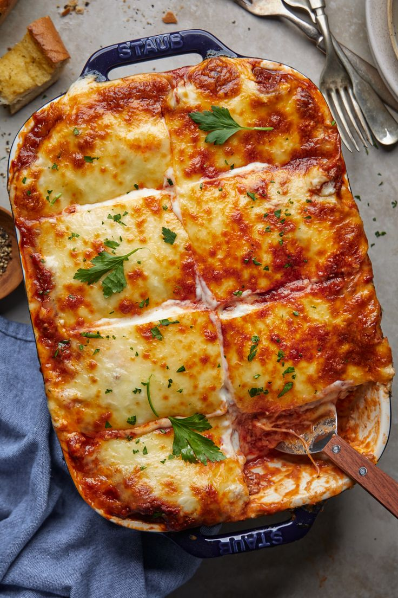

Lasagna Recipe

Hearty, rich, cheesy and classy beef lasagna that's perfect for family dinners.Get ready to prepare this perfect cozy meal.
Ingredients:
For the meat sauce:
- 2 tbsp olive oil
- 1 medium onion, diced
- 2 garlic cloves, minced
- 500g ground beef
- 800g canned crushed tomatoes
- 2 tbsp tomato paste
- 1 tsp dried oregano
- 1 tsp dried basil
- Salt and pepper to taste
For the bechamel sauce:
- 50g butter
- 50g all-purpose flour
- 500ml warm milk
- Pinch of nutmeg
- Salt to taste
- 1/2 cup grated Parmesan cheese
Other:
- 9 lasagna noodles(pre-cooked or oven-ready)
- 2 cups shredded mozarella cheese
Instructions:
- Make the Meat sauce:
- Heat oil in a pan over medium heat.
- Add onion and cook until soft, about 5 minutes.
- Stir in garlic, and then add the ground beef and cook until browned.
- Add crushed tomatoes, tomato paste, oregano, basil, salt, pepper and sugar.
- Simmer uncovered for 20-30 minutes until thickened.
- Make the Bechamel sauce:
- In a saucepan, melt butter over medium heat.
- Stir in flour and cook for 1-2 minutes.
- Gradually whisk in warm milk until smooth.
- Cook while stirring until thickened.
- Add nutmeg, salt, and Parmesan cheese. Remove from heat
- Assemble the Lasagna:
- Preheat oven to 375°F (190°C).
- In a baking dish, spread alyaer of meat sauce.
- Add a layer of noodles, then bechamel sauce, and repeat layers until used up.
- Top with mozzarella.
- Bake:
- Cover with foil and bake for 25 minutes.
- Uncover and bake for another 15-20 minutes until bubbling and golden.
- Let rest for 10 minutes beore slicing.
Odin Recipes